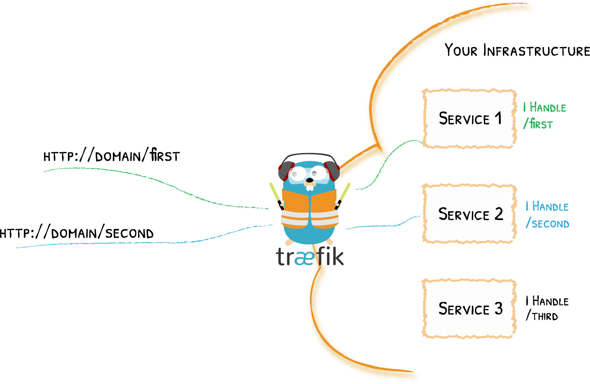

Introduction
介绍
什么是微服务
Docker容器与K8s
为什么是Quarkus
MicroProfile
容器与云
Docker
Kubernetes
Traefik Ingress
Helm
创建Quarkus应用
创建项目骨架
REST API
打包
部署运行
开发微服务
服务配置
数据访问
服务间通讯
容错
反应式编程
可观测性/安全
Published with GitBook
Traefik Ingress
K8s Ingress
Service NodePort的问题
必须带端口访问
应用越多，宿主机暴露端口越多，不安全
无法使用域名访问，或URI规则
Ingress
Ingress 公开从集群外部到集群内服务的 HTTP 和 HTTPS 路由。 流量路由由 Ingress 资源上定义的规则控制
由Ingress Controller实现,
控制器项目
Traefik

Install
CRD
RBAC
DaemonSet
IngressRoute 配置
results matching "
"
No results matching "
"